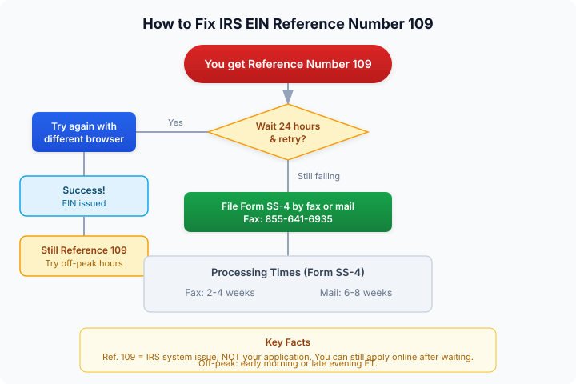

The short version
TL;DR: IRS EIN Reference Number 109 means the IRS online EIN application is experiencing technical difficulties. It is not a problem with your application. Wait 24 hours and retry, or try a different browser during off-peak hours. If the error persists, file Form SS-4 by fax (855-641-6935) or mail as a fallback. This is one of the easier reference numbers to resolve.Last updated: 2026-08-17
What Reference Number 109 Actually Means
When you apply for an EIN through the IRS online portal and see Reference Number 109, the message tells you something went wrong. But it does not tell you what. Here is the straightforward answer: it is a technical error on the IRS side, not a problem with your application.
Reference Number 109 falls into a cluster of similar codes (109, 110, 111, 112, 113) that all point to the same root cause: the IRS EIN online application system is overloaded or experiencing a temporary glitch. The IRS does not publish a detailed explanation for each individual number in this group. What they do tell applicants is that these codes indicate technical difficulties with the online tool.
Unlike Reference Numbers 101 through 105, which flag specific problems with your name, SSN, or business entity, Number 109 says nothing about the quality of your application. Your information could be perfectly correct and you would still see this error if the system is under heavy load.
How to Fix Reference Number 109 (Step by Step)
Because this is a system-side issue, the fixes are simple. Work through them in order:
Step 1: Wait and Retry
The most common cause of Reference Number 109 is high traffic on the IRS online portal. The IRS EIN application tool has defined availability windows (all times Eastern):
- Monday through Friday: 6:00 AM to 1:00 AM (next day)
- Saturday: 6:00 AM to 9:00 PM
- Sunday: 6:00 PM to 12:00 AM
Peak hours are mid-morning to mid-afternoon on weekdays. If you hit Reference Number 109 during that window, close the application, wait 24 hours, and try again during off-peak times (early morning or late evening).
Step 2: Switch Browsers and Clear Cache
If waiting does not help, try these quick technical steps before your next attempt:
- Use a different browser (Chrome, Firefox, Edge, Safari)
- Clear your browser cache and cookies
- Disable browser extensions temporarily
- Make sure JavaScript is enabled
The IRS portal is finicky about browser compatibility. A glitch in your current session can trigger a 109 even when the system itself is working fine.
Step 3: Complete the Application in One Session
The IRS online EIN application has a 15-minute inactivity timeout. If you step away or take too long on any page, the session expires and you start over. Some users report that incomplete sessions can contribute to technical errors on subsequent attempts. Prepare all your information before you begin:
- Business legal name and any trade name (DBA)
- Business entity type (LLC, corporation, sole proprietorship, etc.)
- State and county where the business is located
- Responsible party's name and SSN or ITIN
- Reason for applying (new business, hiring employees, banking purposes, etc.)
- Expected number of employees and first date wages will be paid
Step 4: Apply by Fax or Mail (Form SS-4)
If you have tried the steps above multiple times over several days and keep getting Reference Number 109, the fallback is to bypass the online system entirely. File Form SS-4, Application for Employer Identification Number by fax or mail:
- Fax: 855-641-6935
- Mail: Check the IRS website for the current mailing address based on your state
Faxing is faster. Based on current IRS processing times, expect 2 to 4 weeks for a faxed application and 6 to 8 weeks for mailed applications. You will receive your EIN Confirmation Letter (CP 575) by the same method you used to apply.
Why This Happens
The IRS EIN online application processes millions of requests per year. Reference Number 109 is essentially the system saying "I cannot handle this request right now." There are a few specific triggers:
- Server overload: Too many simultaneous users. This is the most common cause, especially during January through April (tax season) and at the start of new fiscal quarters when many businesses form.
- Maintenance windows: The IRS periodically updates the application system. If you apply during or immediately after maintenance, you may see a 109.
- Session conflicts: If your browser has stale session data or cookies from a previous incomplete attempt, the new session may collide with it.
- Network or firewall issues: Corporate networks, VPNs, or strict firewall settings can sometimes interfere with the IRS portal's communication.

Who Should Get Professional Help
For most people, Reference Number 109 is a temporary speed bump, not a roadblock. You do not need professional help to resolve it. Try the steps above and you will almost certainly get through.
However, there are situations where professional assistance makes sense:
- You are a non-U.S. founder without an SSN or ITIN. The IRS online application requires a valid SSN or ITIN from the responsible party. If you do not have one, you cannot use the online portal at all, and Reference Number 109 becomes moot. You will need to apply by phone, fax, or mail using Form SS-4. A service like doola can handle the entire EIN application process for non-U.S. founders, including the paperwork and IRS coordination.
- You have tried everything and the error persists for weeks. This is rare with Reference Number 109 specifically, but if it happens, there may be an underlying issue that requires direct IRS follow-up or professional guidance.
- You are forming your first business and want end-to-end support. If you are also setting up your LLC, need an operating agreement, and want someone to handle the EIN application alongside formation, a formation service can bundle everything. doola handles LLC formation, EIN application, and compliance in one package.
IRS Contact Information
If you need to call the IRS about Reference Number 109 or any other EIN issue:
- IRS Business & Specialty Tax Line: 800-829-4933
- Hours: Monday through Friday, 7:00 AM to 7:00 PM (local time)
- Tip: Press option 1, then 1, then 3 to reach an operator
Call early in the morning for the shortest hold times. The IRS reports extremely high call volumes during peak periods, and hold times can exceed 60 minutes.
Frequently Asked Questions
Does Reference Number 109 mean my application was rejected?
No. Reference Number 109 does not mean your application was rejected or that there is anything wrong with the information you provided. It means the IRS online system encountered a technical problem while processing your request. Your application data is not stored between attempts, so you will need to start fresh when you try again.
Can I still get an EIN online if I got Reference Number 109?
Yes. Unlike some other reference numbers (such as 101 or 102) that require you to switch to Form SS-4, Reference Number 109 does not bar you from the online application. The IRS explicitly states that this code does not mean you cannot get an EIN online. Wait and retry.
How long should I wait before trying again?
At least 24 hours. The IRS recommends waiting a full day before reattempting the online application after any technical error code. This gives their systems time to clear any backlog or complete maintenance.
What if I keep getting Reference Number 109 no matter what?
If you have tried different browsers, cleared caches, waited 24 hours, and attempted during off-peak times without success, file Form SS-4 by fax to 855-641-6935. This bypasses the online system entirely. You can download Form SS-4 from IRS.gov.
Does it matter what time of day I apply?
It can. The IRS online EIN application is busiest during weekday business hours. Early mornings (before 8:00 AM ET) and late evenings (after 8:00 PM ET) tend to have lighter traffic. Weekend applications also see lower volumes, though the application window is more limited.
Is there a fee to apply for an EIN?
No. The IRS does not charge a fee for EIN applications. If a website asks you to pay for an EIN, it is a third-party service charging for assistance, not for the EIN itself. You can always apply directly through the IRS for free at IRS.gov.